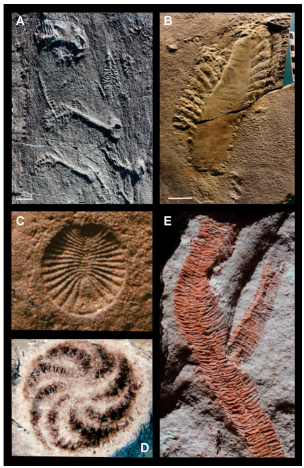

Dawn of metazoans: to what extent as this influenced by the onset of "modern-type plate tectonics'?

Resumo em Português
O aparecimento de eucariotos multicelulares megascópicos complexos no Ediacarano ocorreu precisamente quando a dinâmica de um resfriamento da Terra permitiu o estabelecimento de um novo estilo de tectônica global que continua até o presente como "tectônica de placas de tipo moderno". O advento desse estilo foi primeiramente registrado em eclogitos de Ultra-Alta Pressão (UAP) portadores de coesite com ~620 Ma de idade, dentro da megazona de cisalhamento Transbrasiliana-Kandi, ao longo do sítio da Orogenia do Gondwana Ocidental (OGO). Esses eclogitos compreendem a evidência mais antiga de subducção profunda por tração de placa capaz de induzir colisões continentais e produzir megamontanhas de alto relevo do tipo Himalaia.A vida, antes desse momento, era essencialmente microscópica. No entanto, com a crescente oxigenação Neoproterozoica e o intensificado aporte de nutrientes aos oceanos Ediacaranos, resultante da erosão dessas montanhas, eucariotos heterotróficos macroscópicos complexos surgiram e diversificaram-se, levando a biosfera a um novo limiar evolutivo. A elevação repetida de megamontanhas do tipo Himalaia desde então tem continuado a desempenhar um papel fundamental no fornecimento de nutrientes e na evolução da biosfera. Embora outros autores tenham aludido à influência da construção de montanhas no Gondwana sobre a evolução Ediacarana, este trabalho identifica precisamente quando e onde esse processo teve início.